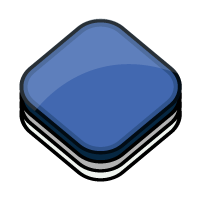

OL3
Fund raising
http://ol3js.org
Outline
- Vision
- Design principles
- Demos
- Status update
Vision
Where OL3 is going
2D 3D Convergence

(Image courtesy of the OSM-3D.org project)
Client-side rendering

Maps are Graphics

Where does OL3 fit?

OpenLayers 3
OpenLayers 3
Design principles
SoC - 1/3
Separation of Concerns
SoC - 2/3
- Map
- Map has a renderer
- Map has a view
- Map has layers
- Layers have sources
SoC - 3/3
Interactions versus Controls
High-Performance
For example:
- Avoid boxing/unboxing operations
- Be nice with the GC and reuse objects
- Use
rAFand watch the frame rate - Redraw as few pixels as possible
- Use Closure Compiler
Closure Compiler
- Variable renaming
- Dead code elimination
- Property flattening
- Prototype method devirtualization
- Inlining
No opinion on the UI
- Use CSS
- Integration with UI toolkits:
ol.Overlay
Demos
ol.Map/ol.View
var view = new ol.View2D({
center: [0, 0],
zoom: 0
});
var map = new ol.Map({
target: 'map',
layers: [layer],
view: view
});
ol.layer/ol.source
var osm = new ol.layer.Tile({
source: new ol.source.OSM()
});
var bing = new ol.layer.Tile({
source: new ol.source.BingMaps({
// your key here
key: 'AlQLZ0-5yk301_ESrmN...',
style: 'AerialWithLabels'
})
}));
ol.interaction/
ol.control
interaction/control example
ol.animation
animation example
ol.style
var style = new ol.style.Style({
rules: [
new ol.style.Rule({
filter: 'type = "highway"',
symbolizers: [
new ol.style.Stroke({
width: 3
})
]
})
]});
Status update
v3.0.0-beta.1
is out!
What's missing?
- WebGL vector
- Vector drawing/selection/editing
- Custom builds tool
- Maturity!
- API stability!
Challenges/lessons
- WebGL is hard
- Stabilize APIs takes time